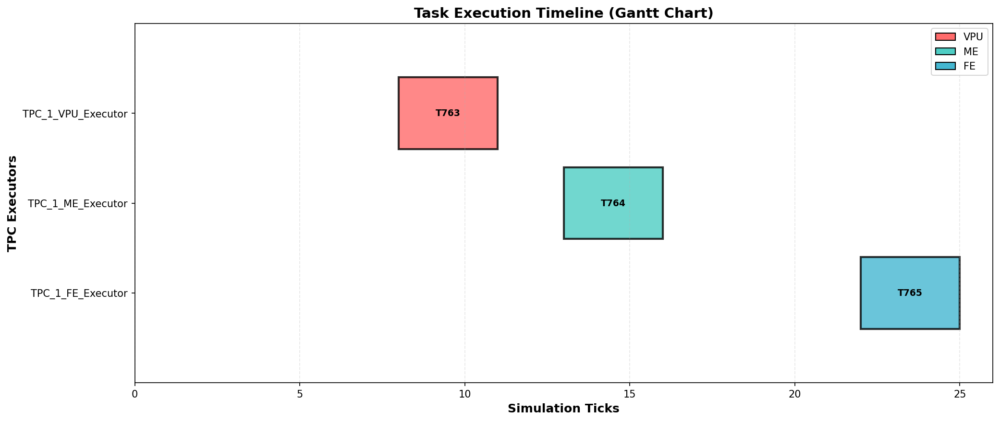
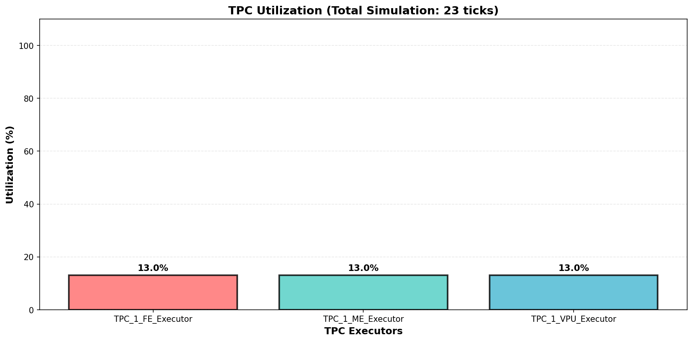
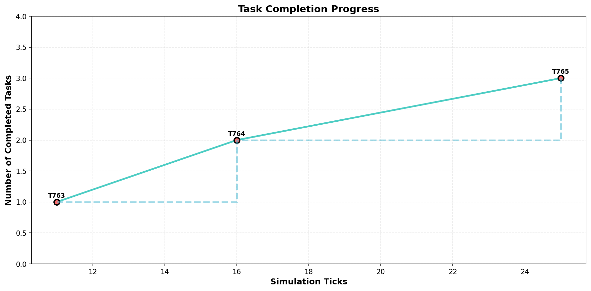
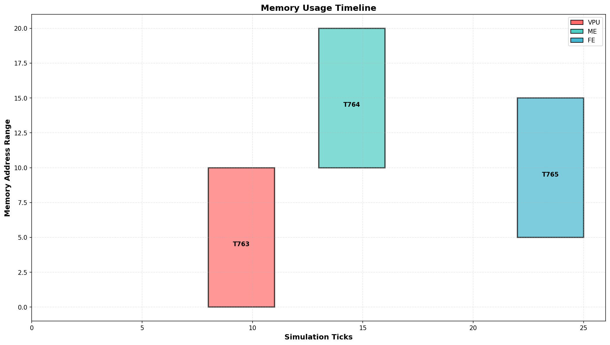

Task Execution Timeline (Gantt Chart)

Shows when each task was executed on which TPC executor. Each colored block represents a task, with the x-axis showing simulation ticks and y-axis showing different executors (VPU, ME, FE).
TPC Utilization

Displays the percentage of time each TPC executor was busy executing tasks vs idle. Higher percentages indicate better utilization of resources.
Task Completion Progress

Shows the cumulative number of completed tasks over time. Demonstrates how quickly the system completes workload and identifies bottlenecks in task execution.
Memory Usage Timeline

Visualizes memory address ranges occupied by tasks over time. Shows memory access patterns and potential memory conflicts or overlaps.